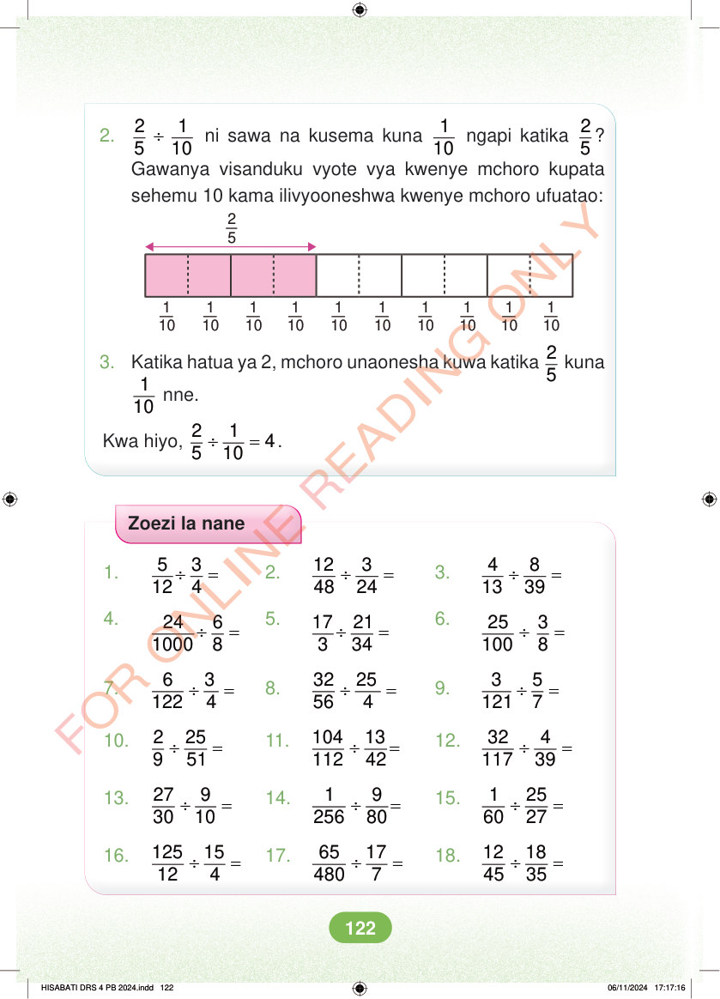

<!DOCTYPE html>
<html lang="sw-TZ"><head><meta charset="utf-8"><meta name="viewport" content="width=device-width,initial-scale=1">
<title>Hisabati: Kitabu cha Mwanafunzi Darasa la Nne</title>
<meta name="title-id" content="pg128_sec001"><meta name="page-section-id" content="134">
<link href="./content/tailwind_output.css" rel="stylesheet"><link href="./assets/libs/fontawesome/css/all.min.css" rel="stylesheet"><link href="./assets/fonts.css" rel="stylesheet">
<style>body{margin:0;background:#eef1ed}main{width:100%;display:flex;justify-content:center;padding:1rem 1rem 5rem;box-sizing:border-box}#content{width:100%;display:flex;justify-content:center}.pdf-page{position:relative;width:min(calc(100vw - 2rem),56rem);aspect-ratio:540.8980102539062/750.6610107421875;background:white;box-shadow:0 4px 24px #0002;overflow:hidden}.pdf-page img{position:absolute;inset:0;width:100%;height:100%;object-fit:fill}</style>
</head><body><main><h1 class="sr-only" id="page-heading">Ukurasa wa 128</h1><div id="content" class="opacity-0"><section role="article" data-section-type="pdf_accessible_page" data-section-id="pg128_sec001" aria-labelledby="page-heading" class="pdf-page"><p class="sr-only" data-id="pg128_gp001_tx001">2.  ÷ 2 1 5 10 ni sawa na kusema kuna 1 10 ngapi katika 2 5 ? Gawanya visanduku vyote vya kwenye mchoro kupata sehemu 10 kama ilivyooneshwa kwenye mchoro ufuatao: 2 5 1 10 1 10 1 10 1 10 1 10 1 10 1 10 1 10 1 10 1 10 3. Katika hatua ya 2, mchoro unaonesha kuwa katika 2 5 kuna 1 10 nne. Kwa hiyo, ÷ = 2 1 4 5 10 . Zoezi la nane 1. ÷ = 5 3 12 4 2. ÷ = 12 3 48 24 3. ÷ = 4 8 13 39 4. ÷ = 24 6 1000 8 5. ÷ = 17 21 3 34 6. ÷ = 25 3 100 8 7. ÷ = 6 3 122 4 8. ÷ = 32 25 56 4 9. ÷ = 3 5 121 7 10. ÷ = 2 25 9 51 11. ÷ = 104 13 112 42 12. ÷ = 32 4 117 39 13. ÷ = 27 9 30 10 14. ÷ = 1 9 256 80 15. ÷ = 1 25 60 27 16. ÷ = 125 15 12 4 17. ÷ = 65 17 480 7 18. ÷ = 12 18 45 35 HISABATI DRS 4 PB 2024.indd 122 HISABATI DRS 4 PB 2024.indd 122 06/11/2024 17:17:16 06/11/2024 17:17:16</p></section></div></main><div class="relative z-50" id="interface-container"></div><div class="relative z-50" id="nav-container"></div><script src="./assets/offline-preloader.js?v=audiofix-20260824-1"></script><script src="./assets/scorm.js"></script><script src="./assets/base.bundle.local.js?v=audiofix-20260824-1"></script></body></html>